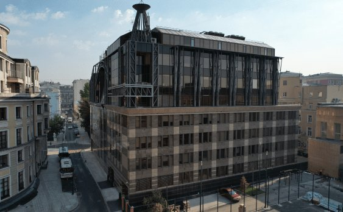

Тверской район · Класс B+
Вознесенский
Офисы в центре Москвы, рядом с Тверской улицей. Бизнес-центр класса B+ с собственным паркингом, кафе и пространствами для ежедневной работы.
Презентация по запросу ↗Напишите нам — направим актуальную презентацию объекта.

м² общей площади
м² арендуемой площади
Парковочных мест
Класс бизнес-центра
Пространство
для вашей команды.
Для компаний, которым важны близость Тверской, удобный маршрут до офиса и качество рабочей среды.
Поможем познакомиться с объектом и обсудить подходящий формат аренды. Актуальные условия и доступные помещения уточняются при обращении.
Написать намГалерея
Посмотрите ближе.
Всё для
рабочего дня.
Инфраструктура бизнес-центра помогает решать ежедневные задачи рядом с офисом.
Столовая на восьмом этаже
Кафе в холле первого этажа
Подземная парковка
Центральная вентиляция и кондиционирование
Как добраться
Большой Гнездниковский пер., 1, стр. 2
Рядом со станциями «Пушкинская», «Тверская» и «Чеховская». Въезд на подземную парковку — со стороны Малого Гнездниковского переулка.
Большой Гнездниковский пер., 1, стр. 2
Интерактивная Яндекс.Карта загрузится после нажатия.
Для будущих арендаторов
Вопросы
об объекте.
Как договориться о просмотре?
Напишите на arenda@umacapital.ru и укажите интересующий бизнес-центр. Команда согласует с вами время посещения.
Как оформляются пропуск и время доступа?
Каждый сотрудник получает индивидуальный электронный пропуск. Зоны доступа и разрешённое время допуска в здание указываются в заявке арендатора. Пропуск предназначен только для личного использования.
Как оформить посещение гостя?
Посещение оформляется заранее через электронную систему пропусков и заявок уполномоченным представителем арендатора. При проходе посетителю потребуется документ, удостоверяющий личность.
Где расположен въезд на парковку?
Въезд на подземную парковку расположен со стороны Малого Гнездниковского переулка. Доступ осуществляется по установленным в бизнес-центре правилам и согласованным заявкам.
Какие сервисы есть в здании?
В руководстве арендатора предусмотрены служба приёма посетителей, корпоративное питание, кафе и техническое обслуживание. Состав услуг внутри арендуемого помещения определяется договором.
Как согласовать переезд или доставку мебели?
Время и порядок доставки крупногабаритных грузов необходимо заранее согласовать с управляющей компанией. Для перевозки используются предусмотренные для этого маршруты.
Как организовано техническое обслуживание?
Инженерные системы проходят плановые осмотры и обслуживание. О работах, затрагивающих арендуемые помещения, арендатора информируют заранее. Обслуживание систем внутри офиса определяется договором.
Начнём с знакомства